DRSABCD: the first 7 checks
Someone has collapsed
D: Danger. Check it’s safe for you, bystanders and the person. Don’t put yourself at risk.
R: Response. Say their name loudly and squeeze their shoulders. If they respond, make them comfortable and keep watching them.
S: Send for help. No response: call 000, or get someone else to call. Stay on the line and follow the call-taker.
A: Airway. Open their mouth. If you can see something in it, roll them onto their side and remove it. Then tilt the head back gently to open the airway.
B: Breathing. Look, listen and feel. Not breathing normally, or only occasional gasps: start CPR. Breathing normally: put them in the recovery position.
C: CPR. 30 chest compressions, then 2 breaths. Keep going. How to do CPR.
D: Defibrillation. Attach an AED (defibrillator) as soon as one arrives and follow its voice prompts.
CPR
Not responding and not breathing normally
Lay them on their back on a firm surface. Put your hands on the centre of the chest, on the lower half of the breastbone. See the depth for their age above.
Push hard and fast: 100 to 120 compressions a minute, almost 2 a second. Let the chest come all the way back up after each one.
After 30 compressions, give 2 breaths: tilt the head back, lift the chin, seal your mouth over theirs and blow for about 1 second each, until the chest rises.
If you can’t or won’t give breaths, keep doing compressions without stopping. Compressions alone still help.
Attach an AED as soon as one arrives and do what it says.
Don’t stop to check them. Keep going until they respond or breathe normally, a paramedic or health professional takes over, or you physically can’t continue.
Choking
Can’t cough, breathe or speak
Call 000.
Give up to 5 sharp back blows between the shoulder blades with the heel of your hand. Check after each one. Stop as soon as it clears.
Still blocked: give up to 5 chest thrusts on the same spot as CPR compressions. Make them sharper and slower than compressions. Check after each one.
Keep alternating 5 back blows and 5 chest thrusts until it clears or help arrives.
If they stop responding, start CPR.
Back blows: lay the baby face down across your lap, head lower than the body, supporting the head. Up to 5 back blows.
Chest thrusts: turn the baby onto their back, head down along your thigh. Use two fingers on the CPR spot. Up to 5 thrusts. Keep alternating.
Severe bleeding
Press hard, keep pressing
Press firmly and directly on the wound with your hands or a pad. This stops most bleeding.
Still bleeding: add a second pad and bandage more firmly. Make sure the pad sits right over the bleeding point. One or two pads press harder than a thick stack.
Something stuck in the wound? Leave it in. Put pads on each side of it and press on the pads.
Tourniquet, only for life-threatening bleeding from an arm or leg that pressure can’t stop, and only if you have one and know how to use it. Put it above the wound (5 cm above if there are no instructions), tighten until the bleeding stops, write down the time and tell the paramedics. Don’t cover it.
Sit them up and lean them forward. Pinch the soft part of the nose, below the bony bridge, for at least 10 minutes (20 on a hot day or after exercise). Spit out blood rather than swallow it. Get medical help if it bleeds for more than 20 minutes.
Anaphylaxis
Severe allergic reaction
Lay them flat. Don’t let them stand or walk. If breathing is hard, let them sit. Remove the trigger if you can.
Give their adrenaline autoinjector (EpiPen or Anapen) into the outer thigh. Follow their ASCIA Action Plan if they have one.
Call 000.
If they have asthma, give their reliever puffer for breathing symptoms, after the adrenaline.
No improvement after 5 minutes: give a second autoinjector if one is available.
If they stop responding and aren’t breathing normally, start CPR.
Heart attack
Chest pain, breathless, sweaty
Stop and rest in whatever position is comfortable.
If they have prescribed angina medicine (tablet or spray), help them take it as directed.
Call 000 if symptoms are severe, getting worse quickly, or have lasted more than 10 minutes. Stay with them.
For an adult with chest pain not caused by an injury, offer 300 mg aspirin, unless they’re allergic to aspirin.
Find the nearest AED and bring it over.
If they stop responding and aren’t breathing normally, start CPR.
Stroke
Think F.A.S.T.
Face: ask them to smile. Is one side drooping?
Arms: can they lift both arms, or is one weak?
Speech: is it slurred, or are they confused by what you say?
Time: call 000 now, even if the signs went away.
Unconscious but breathing: roll them onto their side and keep the airway clear.
Not breathing normally: start CPR.
Unconscious, breathing
Recovery position
Gently get them onto the ground and roll them onto their side, keeping the head tilted back so the airway stays open. Don’t leave them sitting in a chair or with their head between their knees.
Call 000.
Deal with any heavy bleeding.
Keep checking their breathing. If they stop breathing normally, roll them onto their back and start CPR.
Snake bite
Bandage, splint, keep still
Keep them still and calm. Don’t let them walk. Bring the ambulance to them.
Bandage the bite firmly. Use a broad elastic or crepe bandage (10 to 15 cm wide is ideal; clothing or towels will do). Wrap it directly over the bite, firm enough that you can’t easily slide a finger under it.
Then bandage the whole limb. Start at the fingers or toes and wrap upwards as far as you can go. Go over clothing rather than removing it.
Splint the limb so the joints either side of the bite can’t move. For an arm, add a sling. Leave the bandages and splint on until they’re assessed in hospital.
Watch closely. If they stop responding and aren’t breathing normally, start CPR. CPR won’t expose you to the venom.
Jellyfish and marine stings
Box jellyfish, Irukandji, bluebottle
Get them out of the water. Get a lifeguard if there is one.
Call 000 if there’s more than one small sting, or they look or feel unwell.
If they stop responding and aren’t breathing normally, start CPR.
Pour vinegar on the sting for 30 seconds, then pick off any tentacles. Picking them off is safe for you.
No vinegar? Pick off the tentacles and rinse with sea water. Never fresh water, which can make remaining stingers fire.
Use a cold pack, or ice in a dry plastic bag, for pain.
Stay with them. Irukandji symptoms can start 5 to 40 minutes after a sting that seemed minor. Severe pain, sweating, vomiting or trouble breathing means call 000.
Only if you’re sure it’s a bluebottle, the sting is small and the person is well. Pick off tentacles and rinse with sea water. No vinegar, and don’t rub.
Soak the area in hot water, about 45°C, for 20 minutes. Use water the person can tolerate without it burning them. No hot water, or it doesn’t help: use a cold pack.
Call 000 if pain spreads or won’t settle, the sting covers half a limb or more, or it’s near the eye.
Call 000.
Don’t pull out a barb or spine. Pad around it and press on the padding. A stingray wound to the chest or stomach can cause hidden bleeding: keep them still.
For a limb, soak it in hot water, no hotter than you could comfortably keep your own hand in.
Call 000. Apply the pressure bandage and splint as for a snake bite, and keep them still.
The bite may be painless. Watch for numb lips and tongue and weakening breathing.
They may stop breathing yet still hear you. Reassure them and keep up CPR until paramedics take over, even for a long time.
Asthma attack
4 puffs, 4 breaths, 4 minutes
Sit them upright. Stay calm and stay with them.
Give 4 separate puffs of a blue/grey reliever (like Ventolin or Asmol). Shake it, put 1 puff into a spacer, and have them take 4 breaths from the spacer. Repeat until 4 puffs are done. No spacer: use the puffer directly.
Wait 4 minutes. Not better: give 4 more puffs.
Still not better: call 000 and keep giving 4 puffs every 4 minutes until help arrives.
Burns and scalds
20 minutes under cool running water
Stop the burning. On fire: stop, drop, cover your face and roll, or smother the flames with a blanket.
Cool the burn under cool running water for 20 minutes. It still helps up to 3 hours after the burn.
Take off rings, watches and wet or loose clothing near the burn, unless they’re stuck to it.
Cover loosely with cling film or a non-stick dressing. Lay it on; don’t wrap it round a limb, and don’t use it on the face.
Keep the rest of them warm, especially small children, who chill quickly.
Brush off any powder, then flush with running water for at least 20 minutes. Call the Poisons Information Centre on 13 11 26.
Turn off the power before touching them. Stay at least 10 metres from fallen power lines.
Seizure
Protect, time it, side position
Ease their fall if you can and move hard or sharp things away. Put something soft and flat under their head, like a folded jumper. Follow their seizure plan if they have one.
Time the seizure.
Roll them onto their side when you can. When it stops, if they’re unresponsive but breathing, keep them in the recovery position and reassure them as they come round.
Heat illness
Shade, then cool them fast
Move them into shade or somewhere cool. Loosen or remove extra clothing.
Cool them fast. Best for anyone over 5: lie them in cold water up to the neck for 15 minutes.
No cold water bath? Wet them with a hose or shower, put ice packs on the groin, armpits, cheeks, palms and soles, keep wetting the skin and fan them non-stop.
Children 5 and under: sponge them in a lukewarm bath, or keep wetting the skin and fanning.
Fully awake and able to swallow: give cool water, or a sports drink after hard exercise.
Keep checking they’re conscious and breathing. Not breathing normally: start CPR.
Poisoning
Call 13 11 26. Includes button batteries
If it’s safe, move them away from the poison or the poison away from them.
Swallowed: have them rinse their mouth with water.
On the skin: remove contaminated clothing and flush with running water.
In the eye: hold the eyelids open and flush with cold water for 15 minutes.
Breathed in: get them into fresh air without breathing it yourself.
Find out what, how much and when. Take the container to hospital with them.
Suspect it if a device’s battery cover is open, or a child is drooling, vomiting or has chest pain. Go to an emergency department or call 000 immediately.
On the way, if they can breathe and swallow without trouble: over 1 year, 2 teaspoons (10 mL) of honey every 10 minutes. Use jam if there’s no honey.
Under 1 year: 2 teaspoons of jam every 10 minutes. Never honey for a baby. Nothing else by mouth, and don’t delay getting help to do this.
Spider bite
Funnel-web is the exception
Big black spider, mainly NSW and south-east Queensland. Call 000 straight away. Effects can start within 10 minutes.
Apply the pressure bandage and splint as for a snake bite, and keep them still.
Use an ice or cold pack for pain, for no more than 20 minutes at a time.
No pressure bandage. It makes redback pain worse.
Get medical help if it’s a young child, the pain is severe, or they become unwell or collapse.
Topic cards, not reviewed
These 17 pictures are the home-screen flip deck. They are AI-generated. The words in the alt text are taken from the written steps in src/topics.js. Text drawn on the picture is not the instruction. None of these cards is clinically approved.
Cover of the First Aid Quick Guide. A helper gives chest compressions to a person lying on their back. The written steps are the instruction, not this picture.
- AI-generated. Needs clinical sign-off before the unreviewed label can be removed.
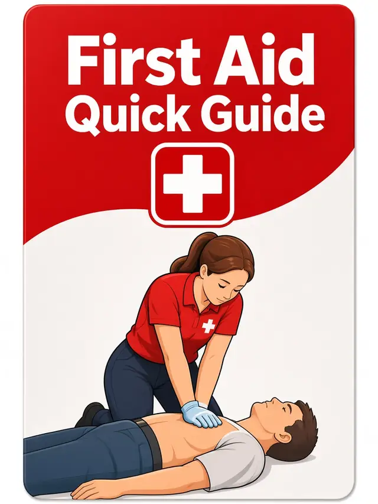
Picture not yet clinically reviewed.
Someone has collapsed. Check it is safe, check for a response, call 000, open the airway, look listen and feel for breathing, start CPR if they are not breathing normally, and use an AED when one arrives.
- AI-generated. Needs clinical sign-off before the unreviewed label can be removed.
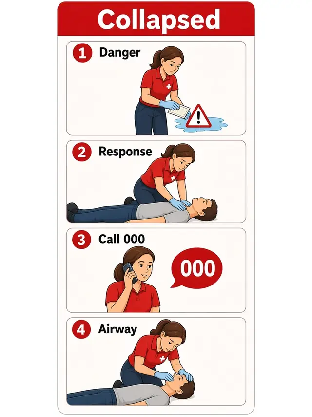
Picture not yet clinically reviewed.
CPR. Lay them on their back on a firm surface. Hands on the centre of the chest, on the lower half of the breastbone. Push hard and fast, 100 to 120 times a minute, then 2 breaths. Keep going.
- AI-generated. Needs clinical sign-off before the unreviewed label can be removed.
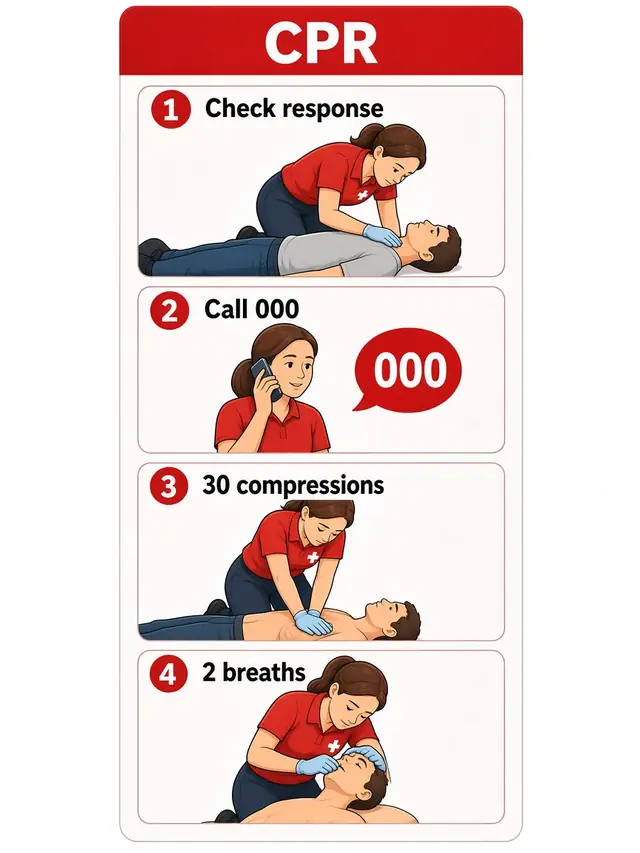
Picture not yet clinically reviewed.
Choking, when they cannot cough, breathe or speak. Call 000. Up to 5 back blows between the shoulder blades, then up to 5 chest thrusts. For a baby, lay them face down with the head lower than the body.
- The infant panel does not clearly show the head lower than the body.
- AI-generated. Needs clinical sign-off before the unreviewed label can be removed.
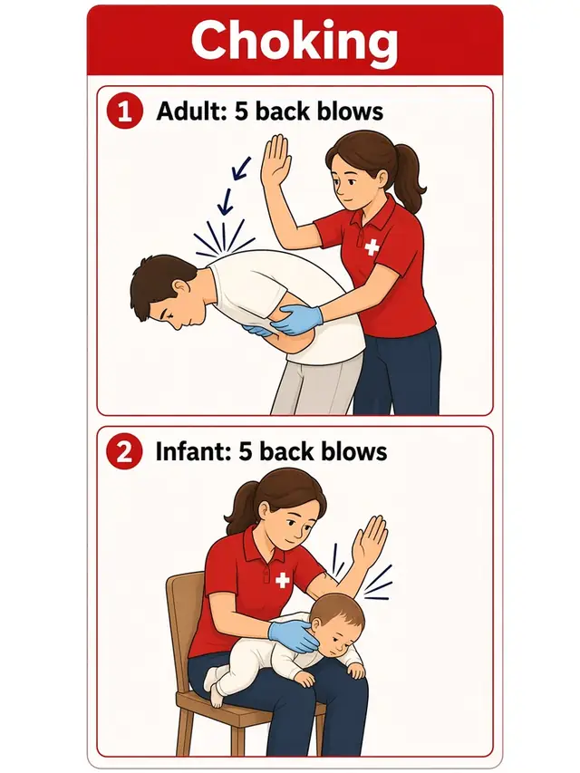
Picture not yet clinically reviewed.
Severe bleeding. Press firmly and directly on the wound. Leave anything stuck in the wound and press beside it. A tourniquet is only for life-threatening bleeding from an arm or leg that pressure cannot stop.
- AI-generated. Needs clinical sign-off before the unreviewed label can be removed.
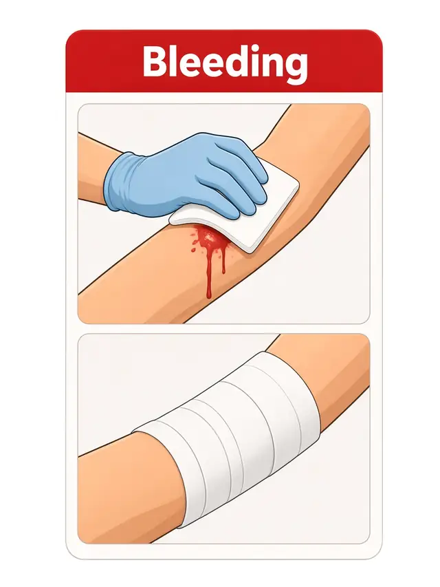
Picture not yet clinically reviewed.
Anaphylaxis. Lay them flat and do not let them stand or walk. Give their adrenaline autoinjector into the outer thigh, then call 000.
- AI-generated. Needs clinical sign-off before the unreviewed label can be removed.
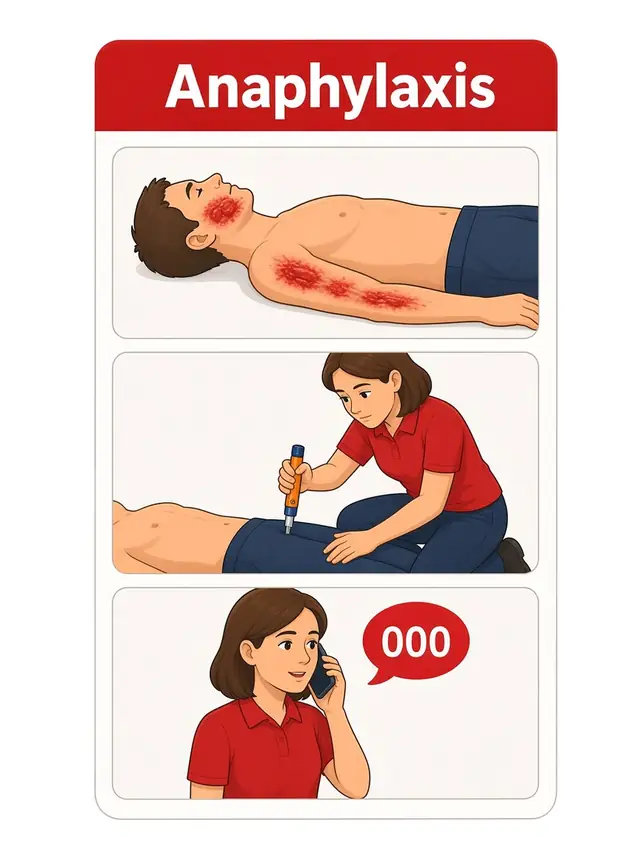
Picture not yet clinically reviewed.
Heart attack. Help them rest, help with their own angina medicine, call 000, and for an adult offer 300 mg aspirin unless they are allergic. Bring an AED.
- AI-generated. Needs clinical sign-off before the unreviewed label can be removed.
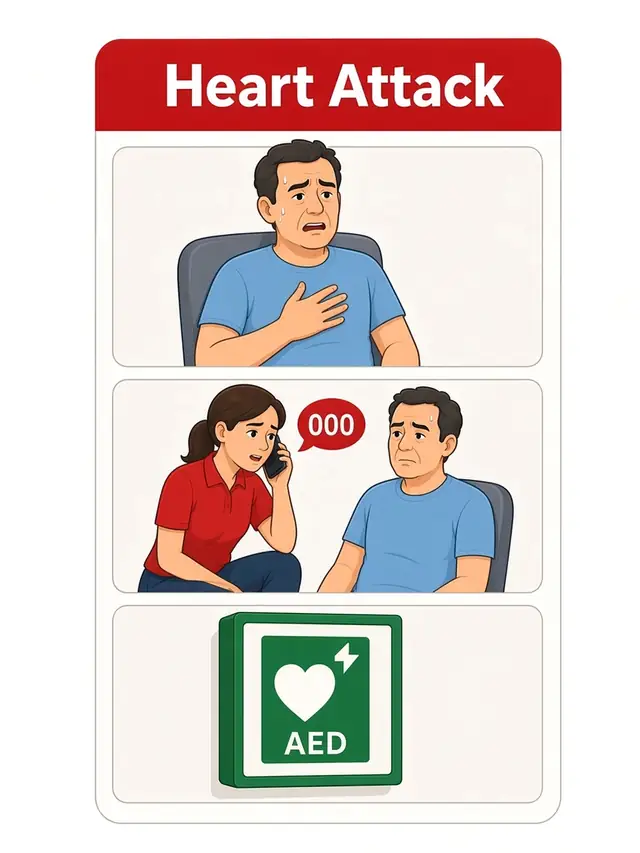
Picture not yet clinically reviewed.
Stroke. Face: is one side drooping? Arms: is one weak? Speech: is it slurred? Time: call 000 now. Do not give them anything to eat or drink.
- AI-generated. Needs clinical sign-off before the unreviewed label can be removed.
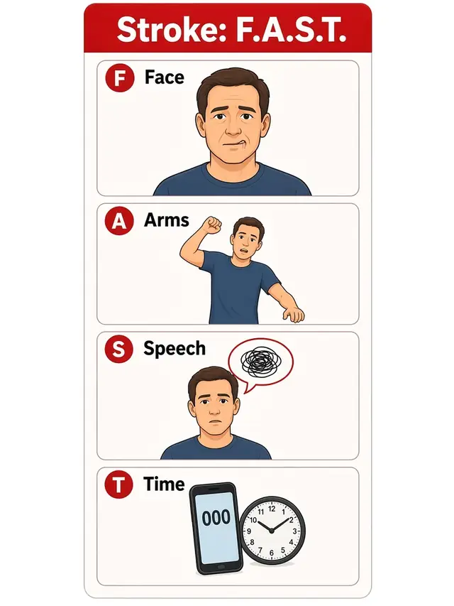
Picture not yet clinically reviewed.
Unconscious but breathing. Roll them onto their side, head tilted back so the airway stays open, and call 000. Keep checking their breathing.
- The recovery position does not clearly show the top knee bent forward.
- AI-generated. Needs clinical sign-off before the unreviewed label can be removed.
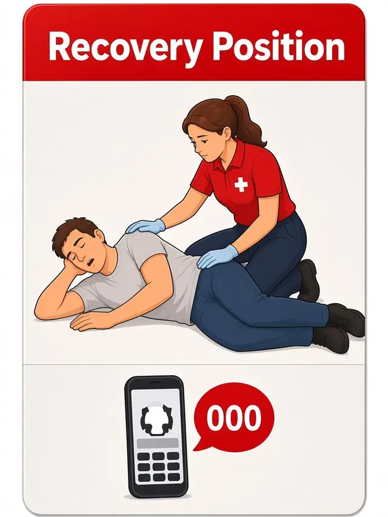
Picture not yet clinically reviewed.
Snake bite. Keep them still. Bandage firmly over the bite, then bandage the whole limb from the fingers or toes upward, and splint it. Do not use a tourniquet. Call 000.
- AI-generated. Needs clinical sign-off before the unreviewed label can be removed.
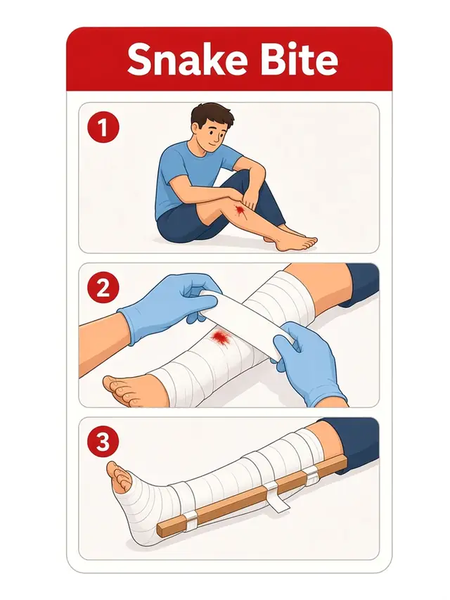
Picture not yet clinically reviewed.
Jellyfish and marine stings. For box jellyfish and Irukandji, pour vinegar on the sting for 30 seconds. For a bluebottle, rinse with sea water and soak in hot water, not vinegar. For a blue-ringed octopus or cone shell, use the pressure bandage and splint, as for a snake bite.
- AI-generated. Needs clinical sign-off before the unreviewed label can be removed.
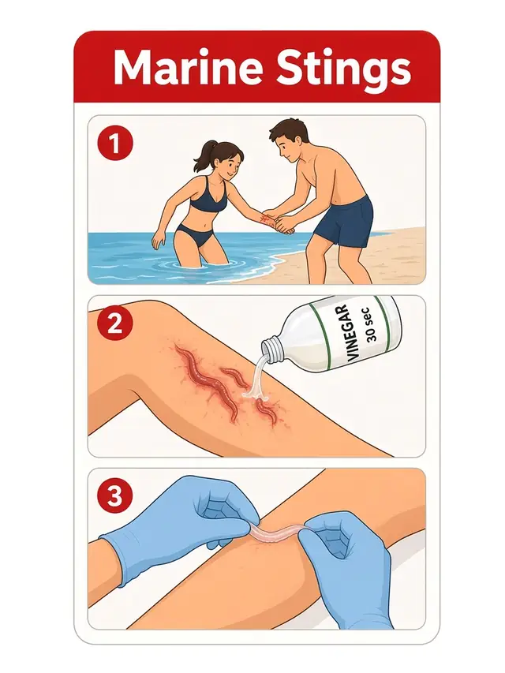
Picture not yet clinically reviewed.
Spider bite. Funnel-web: call 000 and apply the pressure bandage and splint, as for a snake bite. Redback and other spiders: a cold pack for pain, and no pressure bandage.
- AI-generated. Needs clinical sign-off before the unreviewed label can be removed.
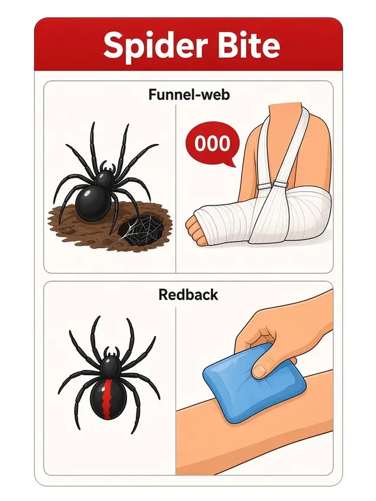
Picture not yet clinically reviewed.
Burns and scalds. Cool the burn under cool running water for 20 minutes. Cover it loosely. Keep the rest of the person warm.
- AI-generated. Needs clinical sign-off before the unreviewed label can be removed.
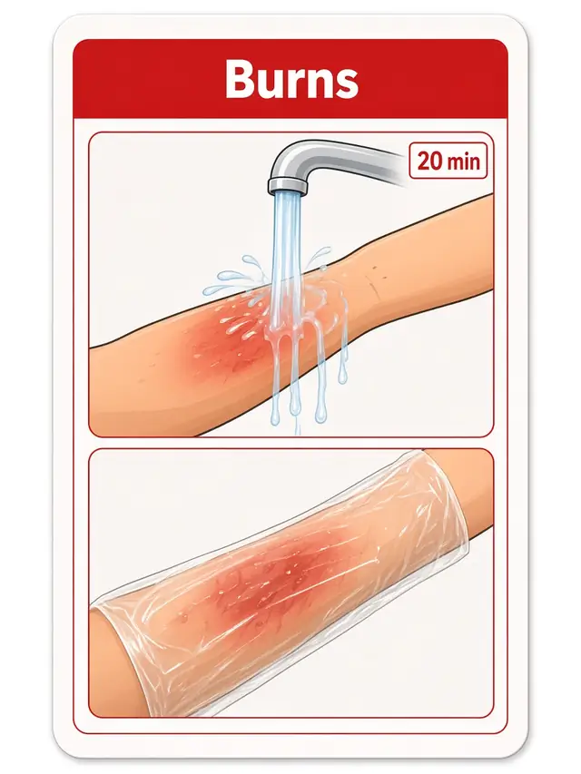
Picture not yet clinically reviewed.
Asthma attack. Sit them upright. Give 4 separate puffs of their blue or grey reliever, one puff at a time into a spacer with 4 breaths from the spacer. Wait 4 minutes. If they are not better, call 000 and keep giving 4 puffs every 4 minutes.
- The spacer is drawn small.
- AI-generated. Needs clinical sign-off before the unreviewed label can be removed.
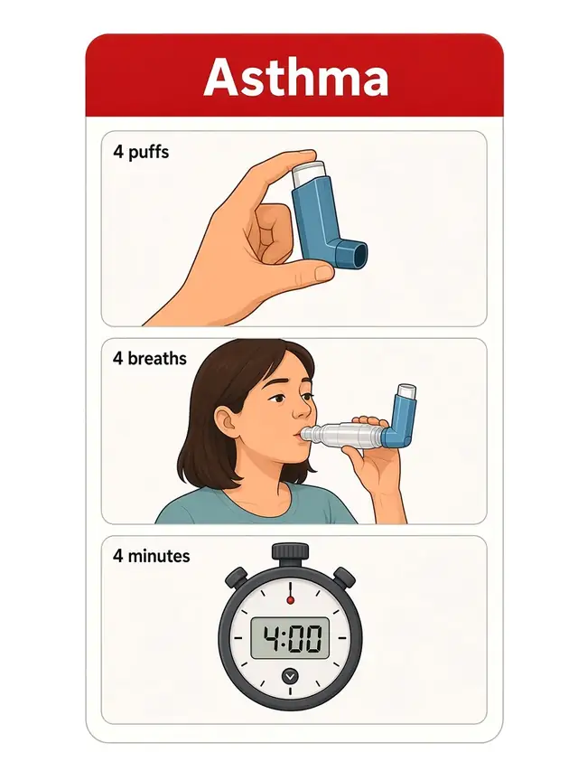
Picture not yet clinically reviewed.
Seizure. Move hard or sharp things away, put something soft under their head, and time the seizure. When it stops, roll them onto their side. Do not hold them down or put anything in their mouth.
- Step 2 shows the rescuer touching the leg while timing the seizure.
- Step 3, the recovery position, does not clearly show the top knee bent.
- AI-generated. Needs clinical sign-off before the unreviewed label can be removed.
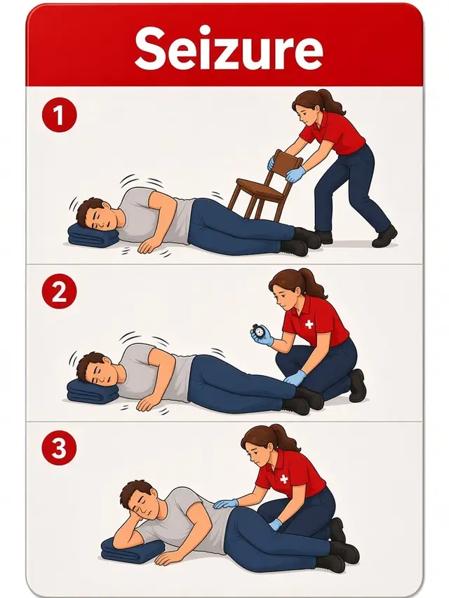
Picture not yet clinically reviewed.
Heat illness. Move them into the shade, loosen extra clothing, and cool them fast. Call 000 if they are confused, very drowsy, or not improving quickly.
- AI-generated. Needs clinical sign-off before the unreviewed label can be removed.
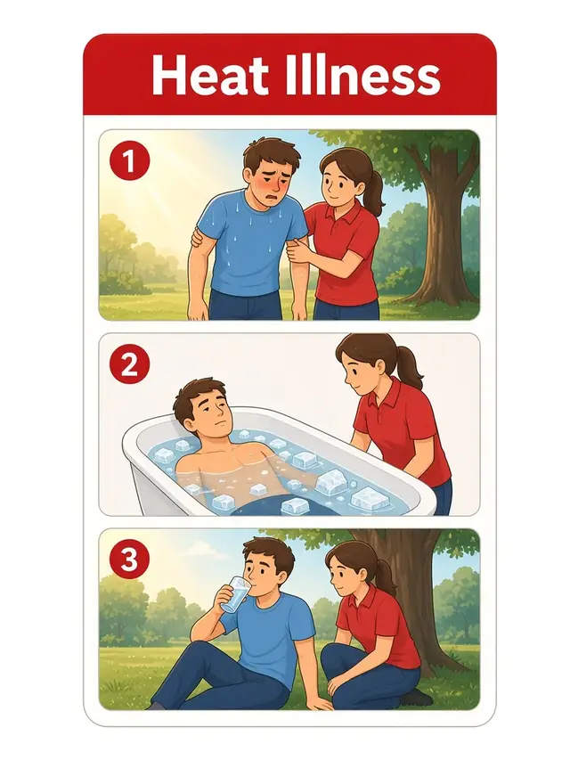
Picture not yet clinically reviewed.
Poisoning, including button batteries. Call the Poisons Information Centre on 13 11 26, and call 000 if they are drowsy or having trouble breathing. Do not make them vomit. A swallowed button battery needs an emergency department straight away.
- AI-generated. Needs clinical sign-off before the unreviewed label can be removed.
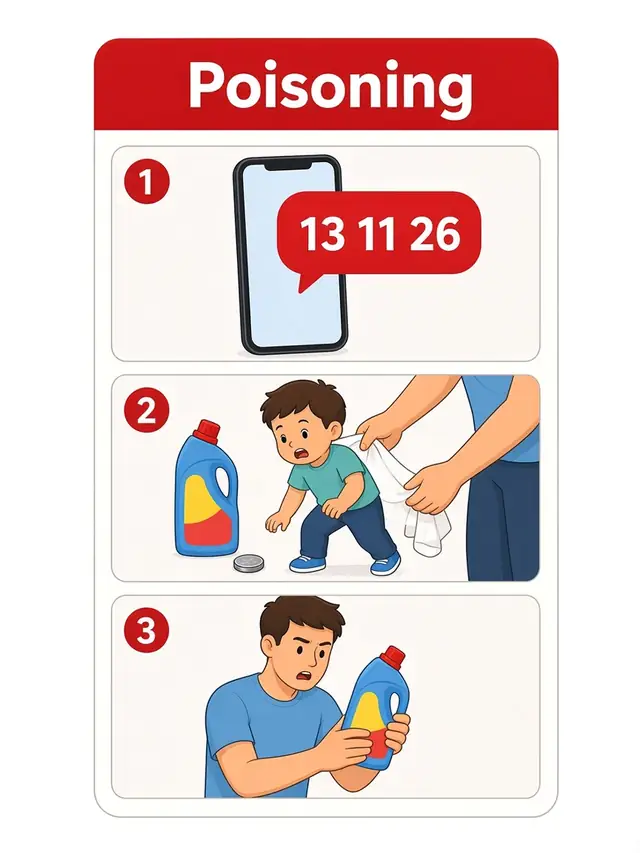
Picture not yet clinically reviewed.
Bites and stings. Snake bite: keep them still, bandage firmly over the bite, then the whole limb from the fingers or toes upward, and splint. No tourniquet. Box jellyfish: vinegar for 30 seconds. A bluebottle: sea water and hot water, not vinegar. Funnel-web spider: the same pressure bandage and splint as a snake bite. Other spiders: a cold pack, and no pressure bandage.
- Summary card for bites and stings. AI-generated. Needs clinical sign-off before the unreviewed label can be removed.
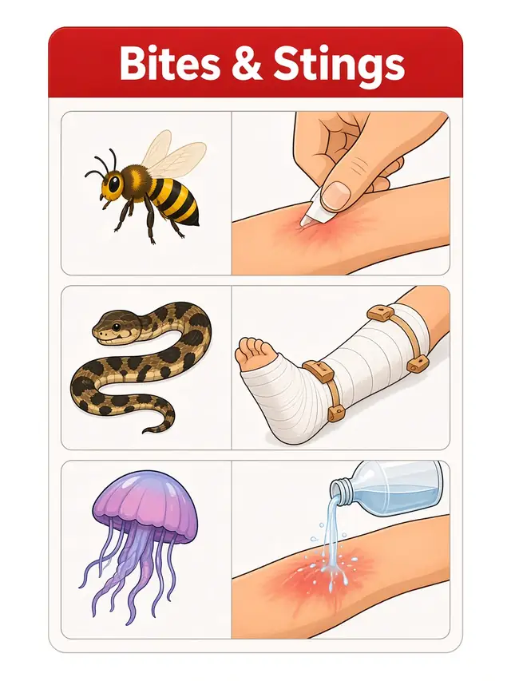
Picture not yet clinically reviewed.
Heart attack, asthma and anaphylaxis. Heart attack: rest, help with their own angina medicine, call 000, and offer 300 mg aspirin to an adult who is not allergic. Asthma: sit upright and give 4 puffs of reliever through a spacer, 4 breaths each puff, then wait 4 minutes. Anaphylaxis: lay them flat and give their adrenaline autoinjector into the outer thigh, then call 000.
- Summary card for heart attack, asthma and anaphylaxis. AI-generated. Needs clinical sign-off before the unreviewed label can be removed.
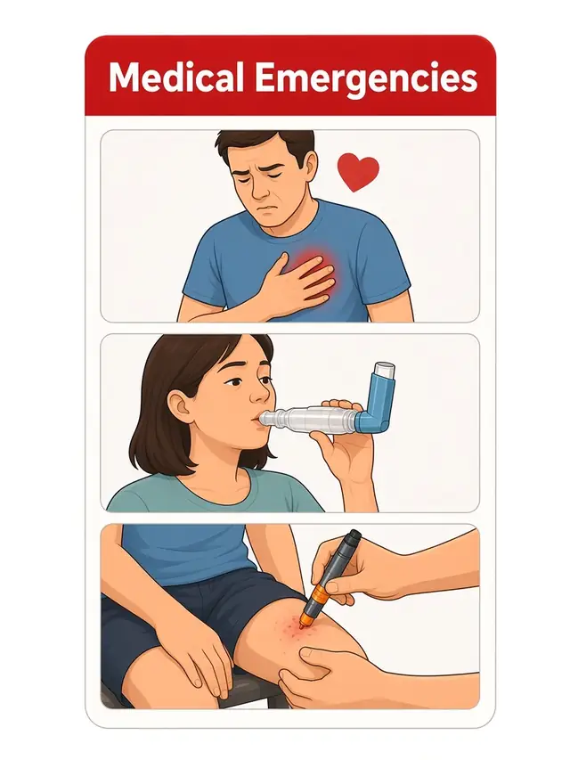
Picture not yet clinically reviewed.